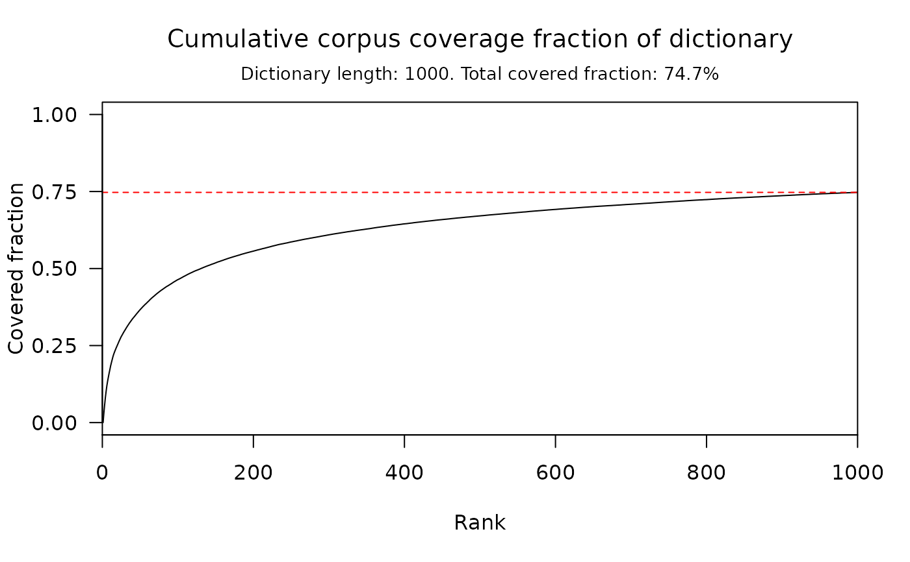

Plot cumulative corpus coverage fraction of a dictionary.
# S3 method for word_coverage plot( x, include_EOS = FALSE, show_limit = TRUE, type = "l", xlim = c(0, length(x)), ylim = c(0, 1), xticks = seq(from = 0, to = length(x), by = length(x)/5), yticks = seq(from = 0, to = 1, by = 0.25), xlab = "Rank", ylab = "Covered fraction", title = "Cumulative corpus coverage fraction of dictionary", subtitle = "_default_", ... )
| x | a |
|---|---|
| include_EOS | length one logical. Should End-Of-Sentence tokens be considered in the computation of coverage fraction? |
| show_limit | length one logical. If |
| type | what type of plot should be drawn, as detailed in |
| xlim | length two numeric. Extremes of the x-range. |
| ylim | length two numeric. Extremes of the y-range. |
| xticks | numeric vector. position of the x-axis ticks. |
| yticks | numeric vector. position of the y-axis ticks. |
| xlab | length one character. The x-axis label. |
| ylab | length one character. The y-axis label. |
| title | length one character. Plot title. |
| subtitle | length one character. Plot subtitle; if "default", prints dictionary length and total covered fraction. |
| ... | further arguments passed to or from other methods. |
This function generates nice plots of cumulative corpus coverage
fractions. The x coordinate in the resulting plot is the word rank in the
underlying dictionary; the y coordinate at
x is the cumulative coverage fraction for rank <= x.
Valerio Gherardi
# }